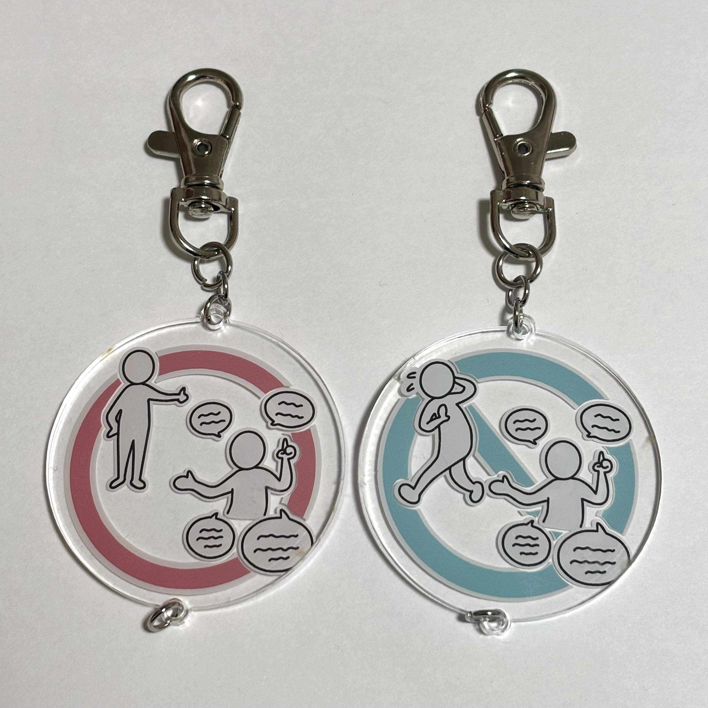
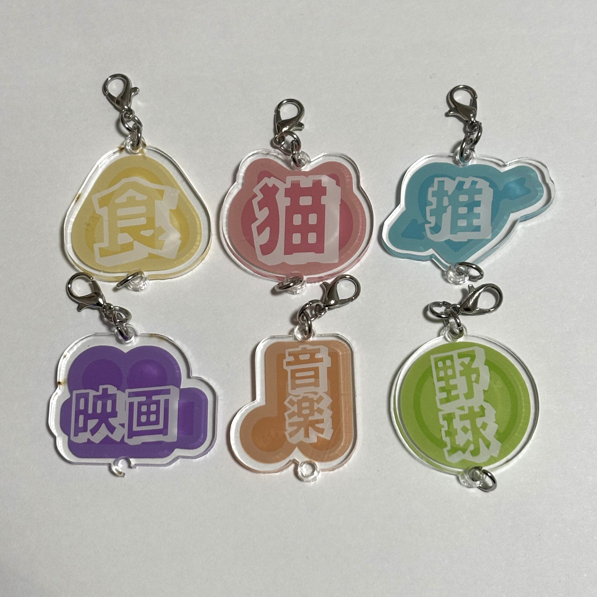
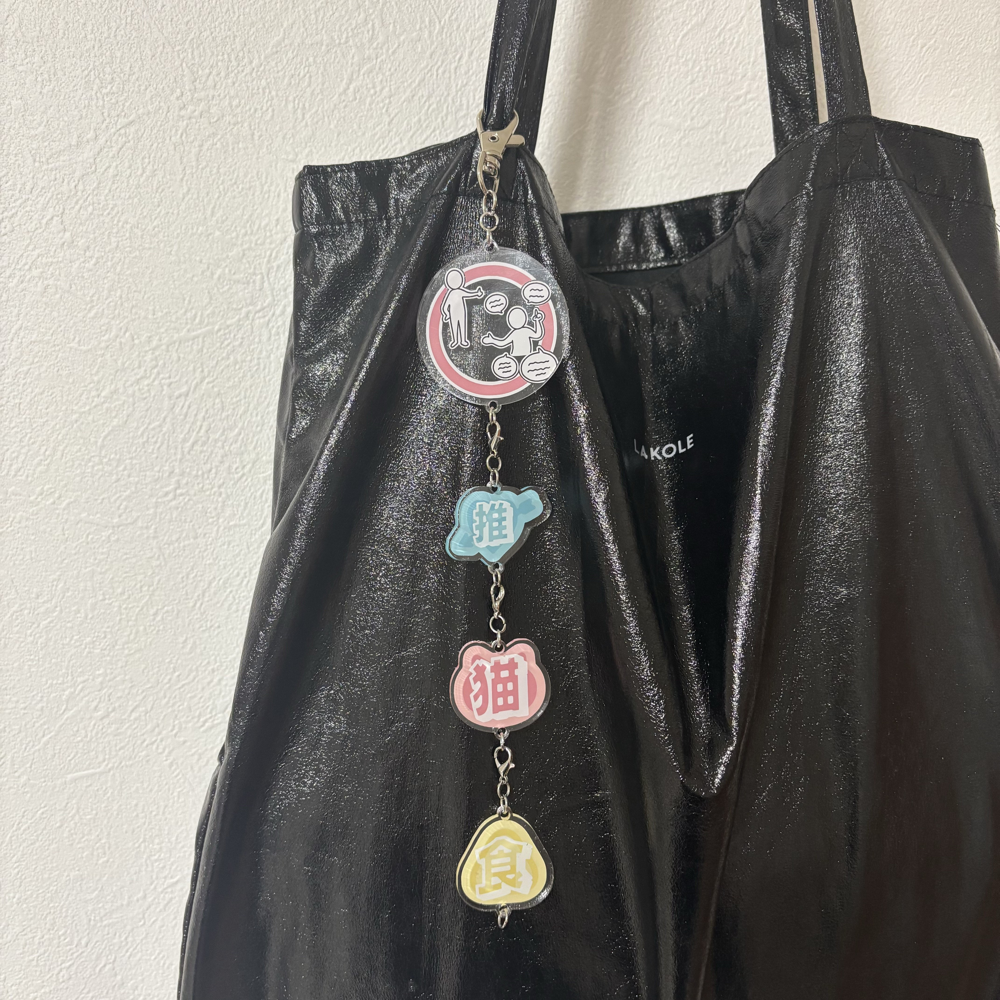
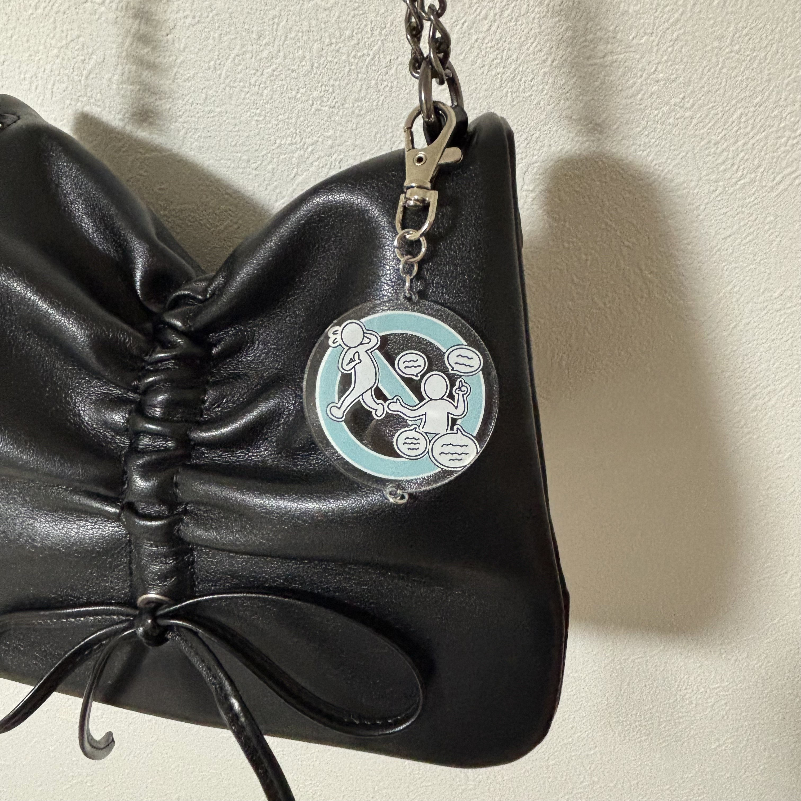
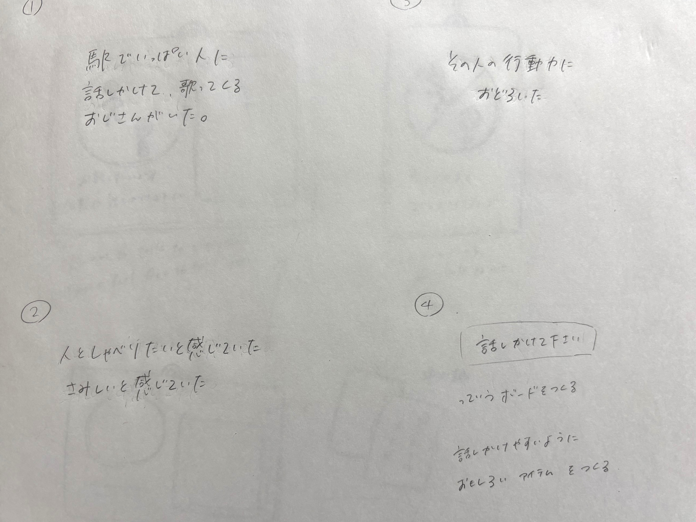
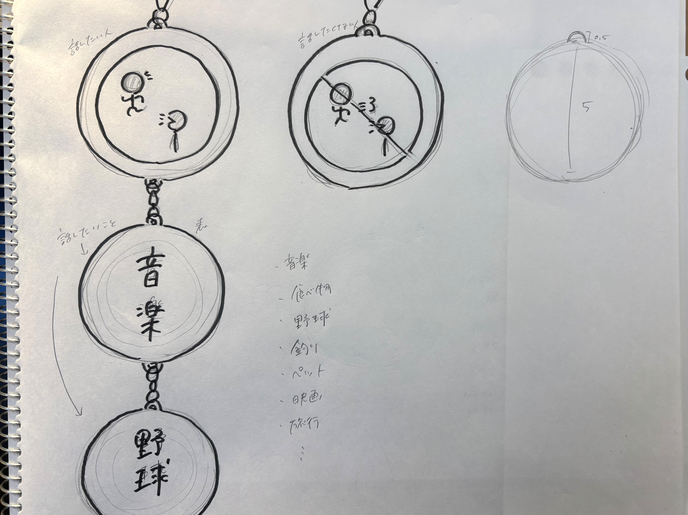
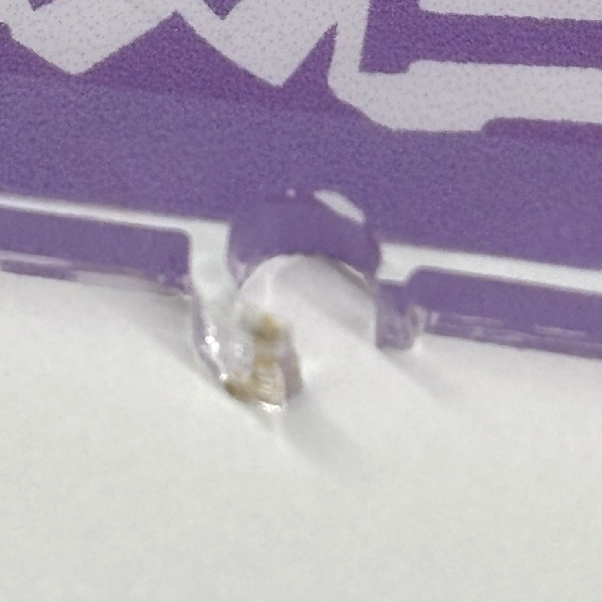
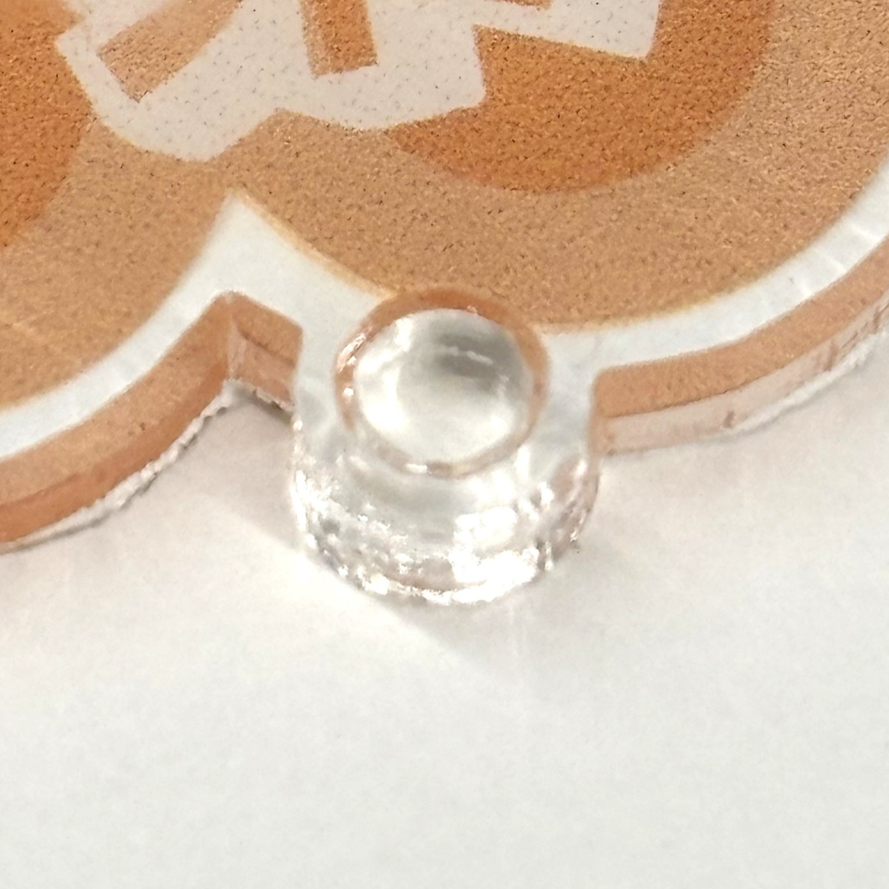
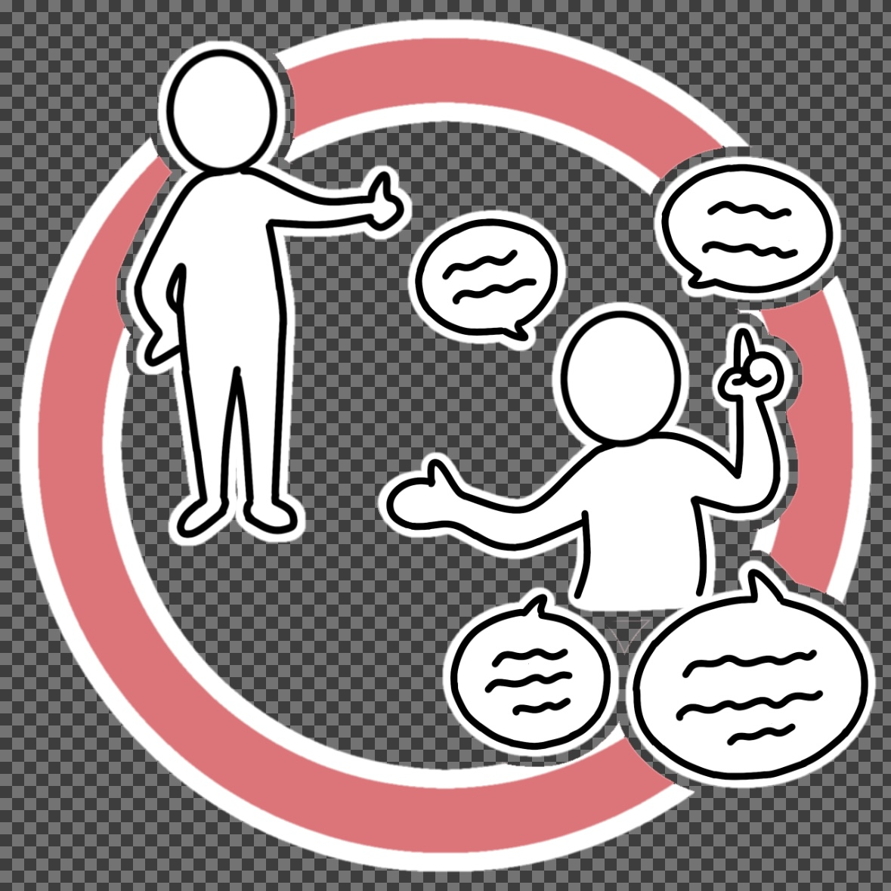
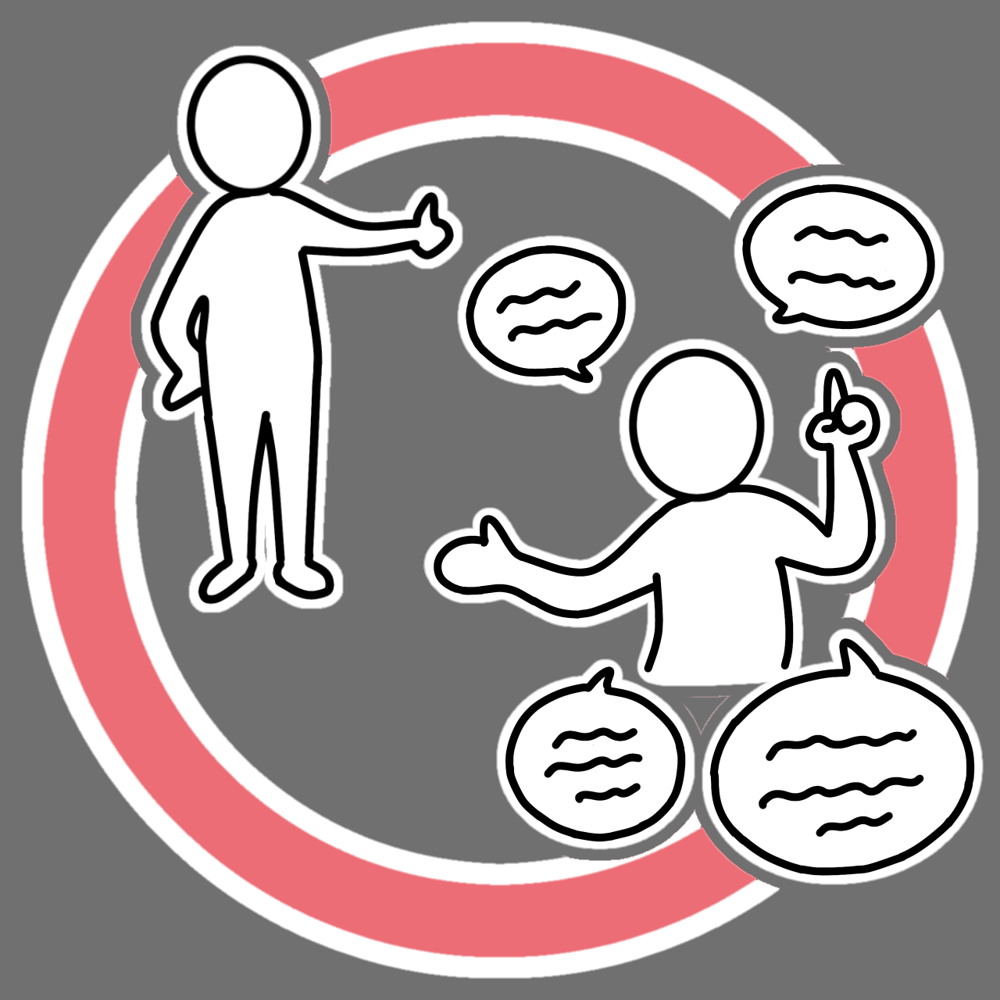

お話OK/NGキーホルダー
完成品


説明
街中でいろんな話をしたいと思っている人、逆に話はしたくないという人がそのことを伝えるためのキーホルダー。
大きい二つのキーホルダーは話をしたいのか、したくないのかを表し、小さめの６つのキーホルダーは話したい話題について表すもの。（内容はいろんな人が話したいと思っていそうなものと、私が話したいことをもとに決めました。）
話をしたい人は大きいキーホルダーの赤い方をつけ、その下に話したい内容の小さいキーホルダーをつなげる。
話をしたくない人は大きいキーホルダーの青い方をつける。実際に鞄につけるとこんな感じ ↓ ↓


取り組むことにした問題
私たちの班ででた「駅でいっぱい人に話しかけて、歌ってくるおじさんがいた」という観察をもとに、話をしたい人同士が話をできる仕組みがあれば良いと思った。
そのため、「いろんな人と話をしたい人」「話をしたくない人」が一目でわかるようなものを作ろうと思った。

スケッチ

うまくいかなかったところ


キーホルダーの金具を通す際に欠けてしまったもの、金具の穴がうまく開いていないものがあった。
また、レーザーカットをする際に切りたい部分のデータ同士が近すぎてこげてしまったところがあるのでがあるので注意が必要だと思った。
制作過程


白が含まれる画像をillustratorでトレースをする際、背景が透過されている画像をそのまま使うと白が消えてしまうため背景に他の色を入れておくとよい。
使用機材
レーザーカッター
UVプリンター
aiファイル
キーホルダーイラスト（EPSファイル）
キーホルダー枠（EPSファイル）
キーホルダーのイラストはibisPaintXを使用して作成した。その後illustratorで調整を行った。
イラスト使用
話題キーホルダーの背景に使用した
無料のAi・PNG白黒シルエットイラスト
班のメンバーのリンク